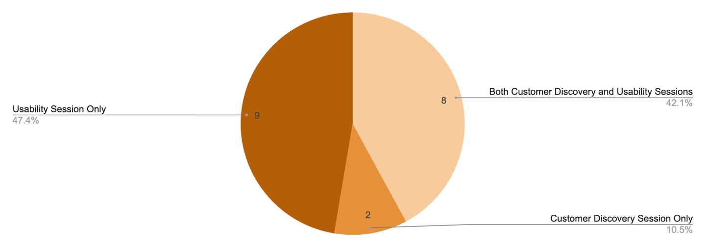
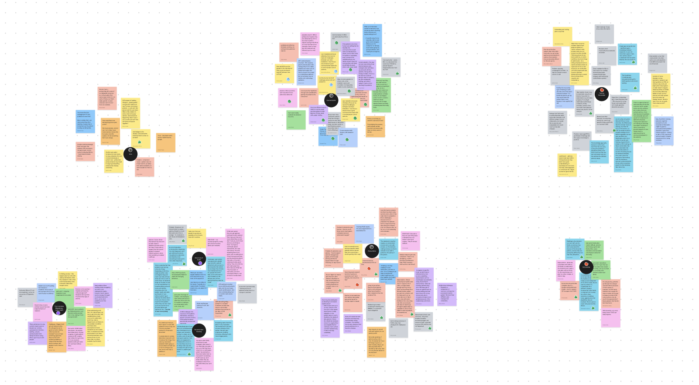
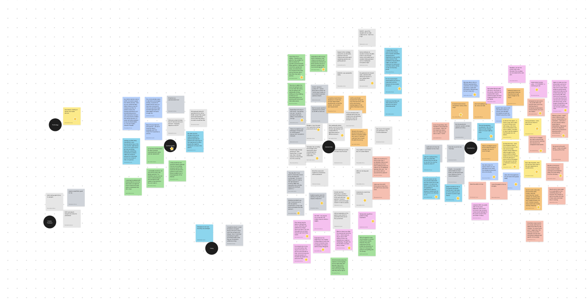
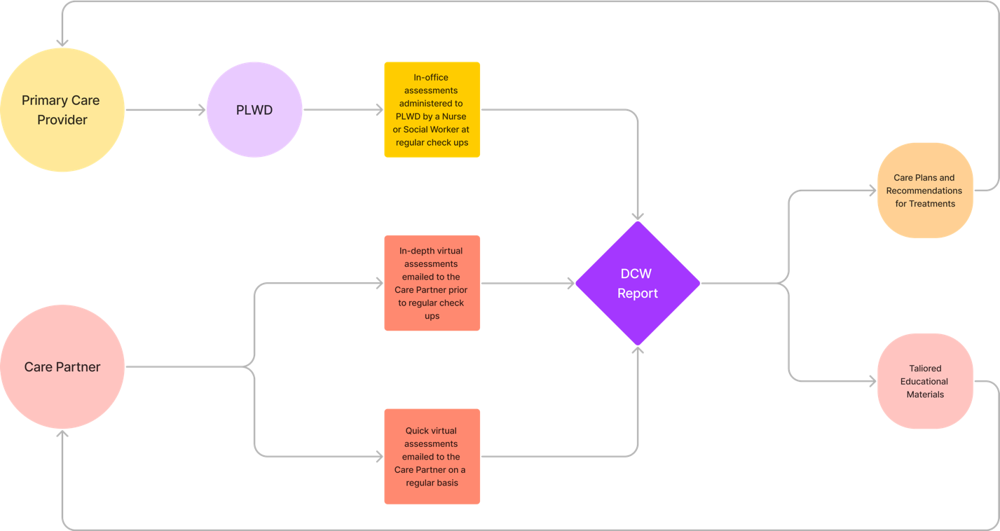
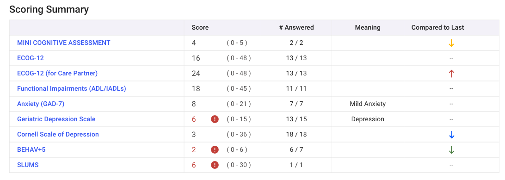
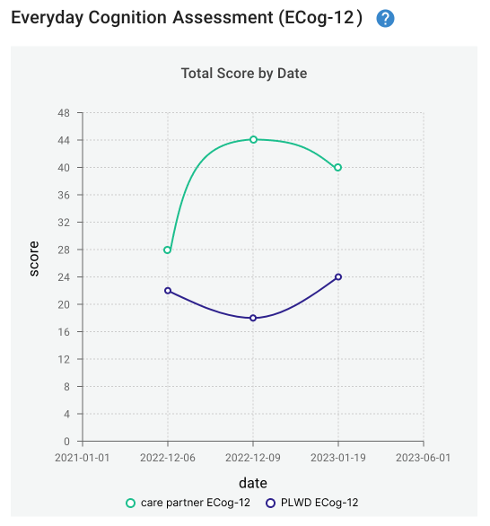
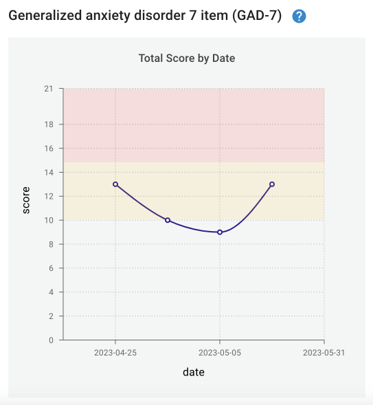

Dementia Care Works
Research and design to educate healthcare practitioners about working with people living with Dementia
2023
researchdesign
prototyping
Research and design to educate healthcare practitioners about working with people living with Dementia
2023
researchdesign
prototyping
The concept and planning on this project were done by the team at the University of Washington (UW) – Dementia and Palliative Education Network (DPEN), and CIRG (and I) joined this project in the development stage. I lead Usability Research, Customer Discovery Research, Research Analysis and Design, while others on the CIRG did the backend development to make the DPEN’s concept a reality.
In the U.S., there are over 6 million people living with dementia (PLWD), who are cared for by 16 million family and friend care partners (CP). Dementia is a progressive and debilitating disease, which requires specialized care, yet only 30,000 geriatricians practice in the U.S. Therefore, many PLWD and their CP lack access to formal dementia care utilizing evidence-based practices. Health systems are additionally struggling to meet the unique needs of this population. Registered nurses are well positioned to meet the complex needs of PLWD and their CP yet have not been formally integrated into health system practice to provide this care. Hence, we developed the DCW platform in order to engage an interdisciplinary approach to dementia care that utilizes nurses’ skill set.
We interviewed a total of nineteen participants in thirteen sessions. Eight participated in both the customer discovery and the usability sessions, two participated in only the customer discovery interviews and nine of the participants only participated in a usability session.

The goal of the customer discovery interviews was to get a better understanding of both the current systems in place to assist in dementia care and the different potential environments that the DCW tool could be used in. These were conducted as conversational interviews with an informal script to guide the questions asked by the moderator.

Customer Discovery Analysis
The usability sessions served a dual purpose. The first was the proof-of-concept meetings and demonstrations to stakeholders laid out in the study objectives. The second was to collect feedback on the DCW tool as it exists to inform the next potential round of development. These sessions were conducted by sending the interviewees the link and login to the demo version of the DCW tool and then asking them to explore the assessment and report and provide us with feedback on the functionality and usefulness of the different elements.

Usability Session Analysis
The following findings are a result of the customer discovery interviews. To read more details about these findings, please see the full report.
The following findings are a result of the usability sessions. Overall participants in the usability sessions thought that DCW was easy to navigate and simple to understand. To read more details about these findings, please see the full report.
These recommendations are based on both the customer discovery interviews and the usability sessions. They are divided into Major Recommendations, Feature Requests and Clinic/Care Home Recommendations. Most of these recommendations can stand on their own when it comes to implementation, they do not require the implementation of the other recommendations to function.
|
Recommendation |
Associated Finding |
|
Bring the Long-Term Care Team into the DCW system |
Communication (Provider-Provider), Communication (DCW as a Communication Tool), Assessments (Screener Completion) |
|
Separate CP and PLWD Assessment Sessions |
Assessments (Care Partner vs PLWD Assessments), Communication (DCW as a Communication Tool) |
|
Further Introduction to System |
Assessments (DCW Assessment Introductions) |
|
Fast vs In-Depth Assessments |
Assessments (Screener Completion) |
|
Simplify Assessments |
Assessments (Screener Completion), Technology |
|
Scoring Summary Details Post Assessment |
Data Visualizations (Scoring Summary) |
|
Additional Detail in Scoring Summary |
Data Visualizations (Scoring Summary) |
|
Compare PLWD and Care Partner Assessments |
Data Visualizations (Assessment Graphs) |
|
Add Color Coding to Graphs |
Data Visualizations (Assessment Graphs) |

In the real world it would be better to have the CP and PLWD assessments be administered in their own bundles rather than going back and forth between the two. This would allow for more flexibility when it comes to scheduling the assessments, as the CP could potentially do their assessments prior to appointments via email.

Some interviewees wanted more nuance in the trend indicator in the scoring summary to differentiate between big and small changes in score. Some requested to add more colors to the red and green arrows to create more of a stoplight indication to differentiate between small and big changes. Others requested to add the previous score to the “Compared to Last” column to do the same differing small and big changes.

In some instances, the same assessment is administered to both the care partner and the PLWD. When working with PLWD they can have trouble accurately answering questions about their health and well-being over time. It would be useful for interpreting scores to be able to see both assessment scores on the same graph to see how the PLWD interpretation of their own health differs from an outside perspective. Below the mock-up shows how layering the two assessment graphs makes it easier to interpret the difference in scores.

Many of the interviewees liked the indications on if a score change was “good” or “bad” in the scoring summary but expressed that it would be more difficult to quickly determine the trend in the graphs of the scores over time. We recommend adding shading to the trend graphs to indicate the ranges of concerning scores. Below are two examples that illustrate how adding shading would make the trend of the assessment graphs easier to interpret.
In conclusion, our study was successful in helping to find the areas in which DCW could be improved and helping to inform whether or not DCW could be used in a real-world setting. Based on the results from our analysis of the interviewees responses, we are of the opinion that there is a need for a platform such as DCW, mainly as a communication tool that would help in the development of care plans and addressing the care needs of PLWDs. Almost all of our interviewees responded positively and expressed that DCW has the potential to be a valuable tool in aiding those who participate in dementia care. Below we have included a check list of recommendations for DPEN content and CIRG Development to aid in the future development process of the Dementia Care Works platform based on our overall findings.
The following are reccomendations we believe could be addressed by content or planning changes
The following are recommendations that we believe would be best addressed by software changes.
The following are recommendations based on our customer discovery and usability interviews that we felt were not able to be addressed by the DCW system.